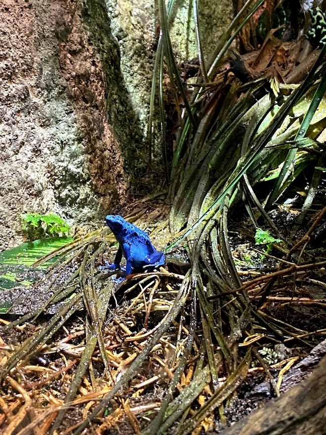

Sights to Highlight Throughout the Summer
Besides the best highlights of my summer, I worked a lot! I was able to help out vaccination clinics for Ottawa Public Health. I was able to help out people not be worried about getting a needle and follow safety protocols.
Another job that I landed was a barista! I always wanted to be a barista, so I got the chance to work at good ol' Starbucks. The location is crazy, but I love chatting with people and make coffee/tea.
Anyways, please enjoy photos that I captured throughout the summer!
